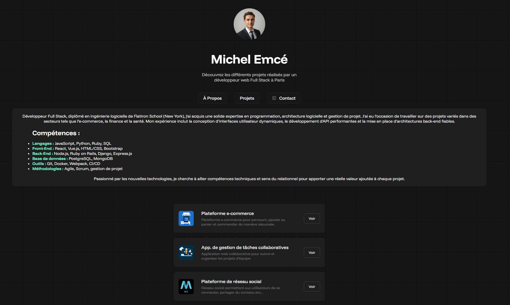

Découvrez des images du projet !



Toute formation consiste en un parcours pédagogique permettant d'atteindre un objectif professionnel. Ce parcours pédagogique donne lieu à l'acquisition d'un ensemble de compétences qui doivent être mises en valeur par l'étudiant à l'issu de sa formation afin de maximiser son employabilité. Destinés à de potentiels recruteur, l'ensemble des compétences acquises, ou plus simplement "portfolio" doit, à l'ère du numérique, être accessible en ligne. Ainsi, quoi de plus évident pour un développeur web full stack que de concevoir et développer lui-même son cyberfolio ?
Ce projet a pour principaux objectifs d'appréhender l'architecture client-serveur et de mettre en opeuvre de manière simple les langages les plus utilisés dans le développement web full stack :
Parmi les objectifs secondaires, les étudiants seront amenés à installer, configurer et prendre en main un environnement de travail local (éditeur de code et serveur web local), à cerner avec précision ce en quoi consiste le métier de développeur web et à concevoir leur futur cyberfolio. Ce projet sera également l'occasion de découvrir un premier aspect relatif à la sécurité des applications web : le hashage des mots de passe.
Le projet s'est effectué en 8 jalons :
Lors de la semaine 1, Il s'agissait de découvrir le métier de développeur web ainsi que du développement frontend :
Au cours de la semaine 2, il s'agissait de faire le développement backend du site :
Lors de la dernière semaine du projet, il a fallu sécuriser le cyberfolio créé :